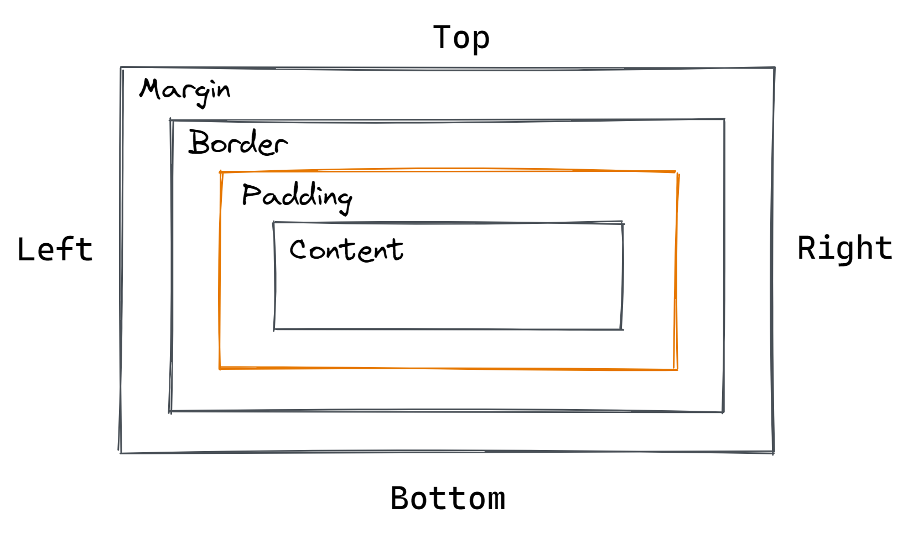
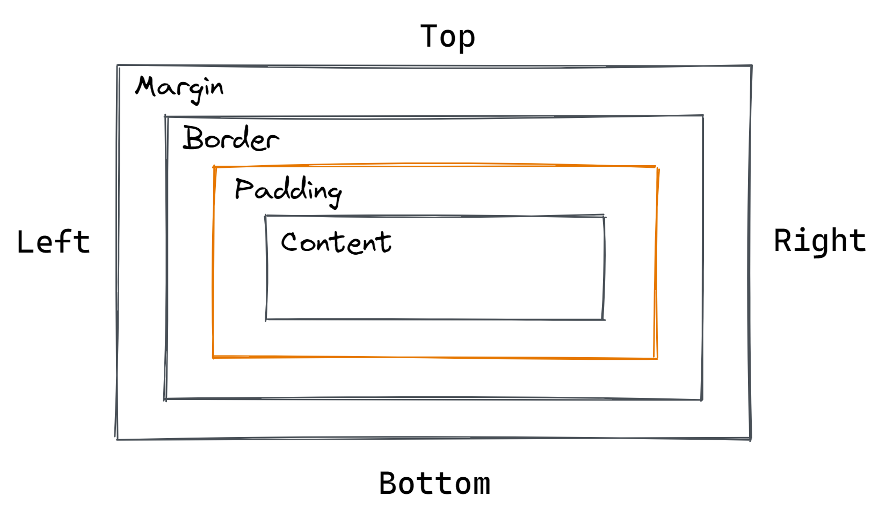

Em uma página WEB, cada elemento é representado como uma box (caixa) retangular. Determinar o tamanho, propriedades - como sua cor, fundo, estilo das bordas - e a posição desses boxes é o objetivo do mecanismo de renderização.
No CSS, cada um desses boxes retangulares é descrita usando o box model padrão. Este modelo descreve o conteúdo do espaço ocupado por um elemento. Cada box possui 4 edges:
-
- Margin.
- É a distancia da borda até o próximo conteúdo ou outra tag.
-
- Border.
- Border é a borda do content.
-
- Padding.
- Padding é o espaço entre o conteúdo e a borda.
-
- Content (Conteúdo).
- Content é o conteúdo da página qualquer outra coisa...
- Content (Conteúdo).
 

Sobre Content
Quando mudamos os valores de height(altura) e width(largura), essa alteração reflete apenas no conteúdo, e não na margin, border ou no padding.
Sobre Padding
O background-color, preenche apenas conteúdo e padding. Então não adianta aumentar a margin ou border para o background expandir, mas é atraves do padding que torna maior o background. No Caso de um botão, precisa mexer no padding para mudar o tamanho e o padding tambem é clicavel, por isso não pode mudar com a margin
Sobre a Border
A borda vai no seu lugar mesmo e ela pode ser estilizada da forma que quiser.
Sobre Margin
A margin vai ser completamente transparente e vai ser apenas para distanciar os elementos ao lado dela.
Propriedades
Box-sizing: Por padrão o box-size é box-sizing: content-box, ou, o width e height vai ser aplicado somente no content. E para definir a altura total do elemento com height, precisa colocar box-sizing: border-box e assim vai controlar como o tamanho do elemento vai ser calculado.
- Dicas sobre CSS
- Criar um arquivo chamado de "reset.css" para tirar por padrão a estilização que tem no site e para afinalidade de zerar a margin, padding e utilizar box-sizing: border-box
Outline, outline-width: É um desenho por fora da bordar que não ocupa espaço e tecnimente não faz parte do box-model, mas aparece.
Overflow, overflow: visible: Overflow vai definir como o conteúdo que eceder a area do box-sizing vai se comportar (por padrão é visible). Ou seja, como será tratado o conteúdo estiver fora da div.
Valores do overflow: hidden: vai esconder o conteúdo que sobra (vai cortar).
Auto: aparece a barra de rolagem.
Scroll: aparece a barra de rolagem independemente se o conteúdo passou ou não da div.